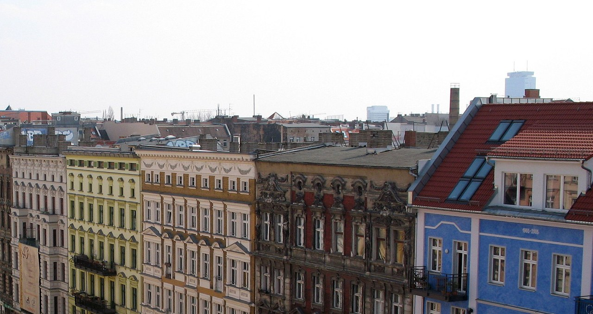

Management for your property portfolio.
You hold your properties for the long term. You need management that handles everyday operations and identifies future priorities. We connect day-to-day management with multi-year maintenance planning and a coordinated view of your portfolio.
What you can expect from us
- A long-term approach to preserving property value
- Early assessment of upcoming works
- A view of costs and priorities across properties
- Consistent processes for an established portfolio
How we start together
Organise the portfolio
We arrange a structured handover of documents, contracts and open matters.
Plan the works
We assess priorities and agree the measures and budgets with you.
Review progress
We discuss building condition and adjust the plan together.
The focus for your property
These priorities build on our rental building management. We agree the specific scope with you.
- Multi-year planning for maintenance and major works
- Prioritising works by building condition and need
- Budget planning for the agreed measures
- Regular reviews of each property’s development
See how we present figures and documents on our reporting page.
Support for energy renovationPANI is run personally by its two founders: analytical discipline shaped by investment-banking experience, and the craft of property management from a family that has run buildings for generations. If you think in decades, both work for you: disciplined steering today, and an understanding of long-held buildings grown over generations.
Let's talk about your holdings.
Tell us about your property and your next steps. Together, we can establish the right scope of management.